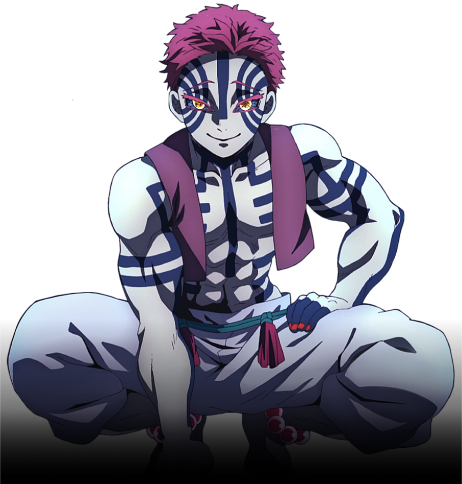
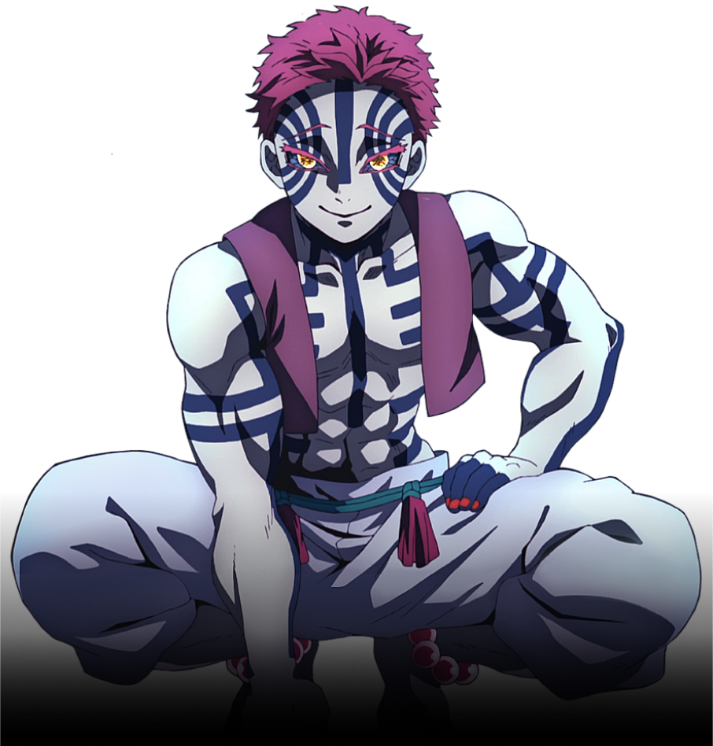

Akaza is a major supporting antagonist of Demon Slayer: Kimetsu no Yaiba. He is a demon affiliated with the Twelve Kizuki, holding the position of Upper Rank Three.
Over a century ago, Akaza was a human by the name of Hakuji, a prodigious martial artist who trained under Keizo while nursing his daughter, Koyuki, who would later become Akaza's fiancée.
 
